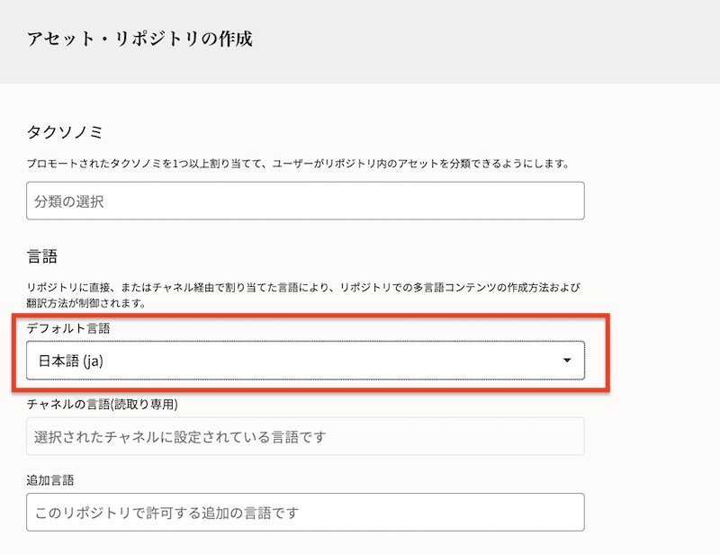
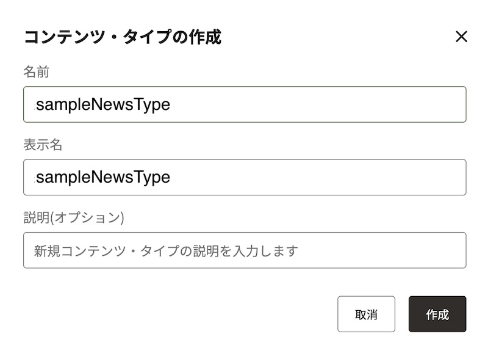
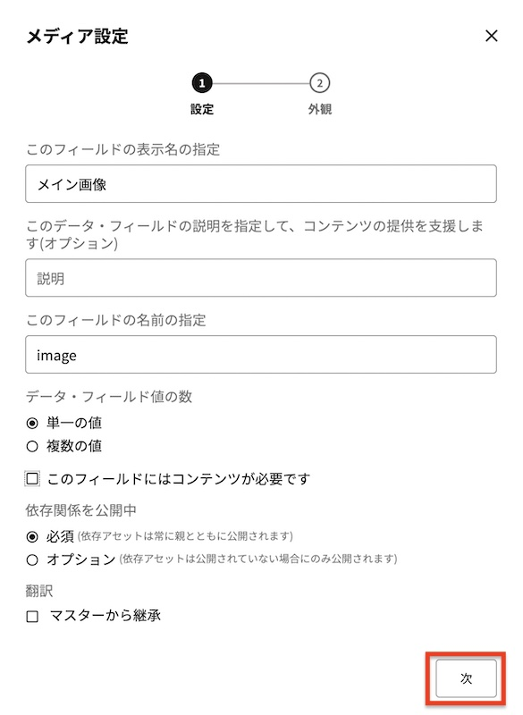

この文書は Oracle Content and Experience (OCE) のアセット管理機能を Headless CMS として利用する基本的な方法をステップ・バイ・ステップで紹介するチュートリアルです。
【お知らせ】
この文書は、2021年7月時点での最新バージョン(21.6.1)を元に作成されてます。
チュートリアル内の画面ショットについては Oracle Content and Experience の現在のコンソール画面と異なっている場合があります。
前提条件
- Oracle Content and Experience インスタンスを作成する
- OCE の利用ユーザーに、少なくとも下記4つのOCEインスタンスのアプリケーション・ロールが付与されていること
- CECContentAdministrator
- CECDeveloperUser
- CECEnterpriseUser
- CECRepositoryAdminisrrator
[Memo]
ユーザーの作成とアプリケーションロールの付与手順は、Oracle Content and Experience インスタンスの利用ユーザーを作成する をご確認ください。
1. アセット機能の利用準備
OCEのアセット管理機能を利用するための準備作業を行います。アセット・リポジトリ、公開チャネル、コンテンツ・タイプをそれぞれ作成し、関連付けを行います。

1.1 アセット・リポジトリを作成する
アセット・リポジトリ（以降リポジトリ）を作成します。
リポジトリとは 「デジタル・アセット（画像）やコンテンツ・アイテム（ニュースやブログなどの構造化コンテンツ）を保管・管理する器」 です。リポジトリは複数作成することができます。
-
OCE インスタンスのアクセスします。OCE インスタンスの URL は以下の通りです。
- https://<OCEInstance>-<CloudAccount>.cec.ocp.oraclecloud.com/documents/home
- <OCEInstance> OCEインスタンス名
- <CloudAccount> クラウドアカウント名（テナンシー名）
- https://<OCEInstance>-<CloudAccount>.cec.ocp.oraclecloud.com/documents/home
-
OCE のホーム画面が表示されます。左ナビゲーションのADMINISTRATIONの 「コンテンツ」 をクリックします

-
コンテンツの右隣のメニューで「リポジトリ」が選択されていることを確認し、「作成」 をクリックします
-
プロパティの「名前」に Sample Content Repository を入力します。その他の項目は未選択のまま、画面を下にスクロールします

-
言語の「デフォルト言語」で 日本語(ja) を選択します。スマート・コンテンツは 「有効」 を選択します（スイッチONの状態）。右上の 「保存」 をクリックします

[Memo]
リポジトリ作成時に「スマート・コンテンツ」を有効（スイッチON）にすると、AI による画像認識技術を活用した画像の自動タグ付け機能 が動作します。これら自動的に付加されたタグは、スマート・コンテンツ・タグ（スマート・タグ） として表示されます。なお、付加されたスマート・コンテンツ・タグの追加・変更・削除はできません -
以上でリポジトリの作成は完了です

2.2 コンテンツ・タイプを作成する
コンテンツ・タイプを作成します。
コンテンツ・タイプは 「コンテンツ・アイテムに含まれる構造を定義するフレームワーク」 です。具体的には、テキスト、大きいテキスト、メディア、日付などのデータフィールドを組み合わせになります。コンテンツ・タイプで定義した構造を利用して、コンテンツ・アイテムを作成します
ここでは、下記の3つのデータ・フィールドを持つ sampleNewsType というコンテンツ・タイプを作成します。
| フィールドの名前 | 表示名 | データフィールド | 単一/複数 | 必須 |
|---|---|---|---|---|
| title | タイトル | テキスト | 単一 | Yes |
| image | メイン画像 | メディア | 単一 | ー |
| body | ニュース本文 | 大きいテキスト | 単一 | ー |
-
コンテンツの右横の「リポジトリ▼」をクリックし、プルダウンメニューから 「アセット・タイプ」 を選択します

-
「アセット・タイプ」が選択されていることを確認し、「作成」 をクリックします

-
アセット・タイプを作成します
-
「アセット・タイプの選択」で、コンテンツ・アイテム・タイプの作成 を選択します
-
「名前」に sampleNewsType と入力し、「作成」 をクリックします

-
-
はじめに、title(タイトル)フィルードを作成します。
-
「データ・フィールド」の 「テキスト」 を、「ここにデータ・フィールドをドロップして定義を追加」にドラッグ&ドロップします

-
「テキスト設定」ダイアログが表示されます。以下の通りに入力し、「次」 をクリックします
- このフィールドの表示名の指定: タイトル
- このデータ・フィールドの説明を指定して…: ニュースのタイトルを30文字以内で入力します
- このフィールドの名前の指定: title
- データ・フィールドの指定: 単一の値
-
このフィールドにはコンテンツが必要です: チェックを入れる

-
「②外観」を設定します。以下の通りに設定し、最後に 「OK」 をクリックします
- データ・フィールドの外観: 「単一テキスト・ボックス」
- 長さの検証: チェックを入れる
- 最小: 0
-
最大: 30

-
-
title(タイトル)フィールドが作成されました。

-
同じ手順を繰り返し、image(メイン画像)を作成します。
-
データ・フィールドの 「メディア」 を、先ほど作成した「タイトル」の下にドラッグ&ドロップします

- 「メディア設定」を入力し、「次」 をクリックします
- このフィールドの表示名の指定: メイン画像
- このデータ・フィールドの説明を指定して…: ニュースで利用するメイン画像を登録します
- このフィールドの名前の指定: image
- データ・フィールドの指定: 単一の値
-
このフィールドにはコンテンツが必要です: チェックを外す

- 「②外観」を設定し、「OK」 をクリックします
- データ・フィールドの外観: メディア・ピッカー
- メディアの選択: イメージのみチェックを入れる
- すべてのデジタル・アセット・タイプ: チェックを外す
- デジタル・アセット・タイプの選択: Imageのみを選択

-
-
「メイン画像」が作成されました。最後に「body(ニュース本文)」フィールドを作成します。
-
データ・フィールドの 「大きいテキスト」 を「メイン画像」の下にドラッグ&ドロップします

- 「大きいテキスト設定」を入力し、「次」 をクリックします
- このフィールドの表示名の指定： ニュース本文
- このデータ・フィールドの説明を指定して…： ニュースの本文を入力します
- このフィールドの名前の指定： body
- データ・フィールドの指定： 単一の値
-
このフィールドにはコンテンツが必要です： チェックを外す

- 「②外観」を設定し、「OK」 をクリックします
- データ・フィールドの外観： リッチテキスト・エディタ
-
リッチテキスト・エディタのツールバー・タイプを選択します： 標準

-
-
以上で sampleNewsType の作成が完了しました。右上の 「保存」 をクリックします

-
「アセット・タイプは正常に保存されました」が表示されることを確認し、右上の 「×」 をクリックします

-
以上で、コンテンツ・タイプの作成は完了です
2.3 公開チャネルを作成する
公開チャネルを作成します。
公開チャネルとは 「リポジトリで管理するアセットの公開先」 です。アセット公開時の各種ポリシーを制御します
- アクセス
- パブリック（認証不要）
- セキュア（認証必須）
- 公開中
- 承認済みアイテムのみ公開できます（アセットの公開に承認が必要）
- すべてを公開できます（アセットの公開に承認は不要）
- ローカリゼーション
- 作成済のローカリゼーションポリシーを選択
- なし
-
「コンテンツ」の右隣の 「アセット・タイプ▼」 をクリックし、「チャネルのパブリッシュ」 を選択します
-
「チャネルのパブリッシュ」が選択されていることを確認し、「作成」 をクリックします

-
「名前」に sampleChannel を入力します
- 「公開チャネルのポリシー」を以下の通りに設定し、「保存」 をクリックします
- アクセス: パブリック
- 公開中: すべてを公開できます
-
ローカリゼーション： 未選択のまま（もしくは「なし」を選択）
[Memo]
ここで設定した公開チャネルのポリシーは、以下の通りとなります- 「公開済アセットは認証なしに外部からアクセス可」
- 「アセットの公開は承認不要」
- 「アセット公開時にローカライズ言語の作成不要」
-
sampleChannel が正しく作成されたことを確認します

2.4 コンテンツ・タイプと公開チャネルをリポジトリに関連付けする
前の手順で作成したコンテンツ・タイプ(sampleNewsType)と公開チャネル(sampleChannel)を、リポジトリ(Sample Content Repository) で利用できるように、リポジトリの設定を変更します。
-
「コンテンツ」の右隣のプルダウンメニューで 「リポジトリ」 を選択します
-
Sample Content Repository のチェックボックスにチェックをいれ、「編集」 をクリックします

-
「アセット・タイプ」で sampleNewsType と Image を選択します
[TIPS]
OCE 21.1.1 より、アセット・リポジトリで画像を利用する場合は、事前定義済のデジタル・アセット・タイプの Image を指定します。もしくは、自分で定義したカスタムのデジタル・アセット・タイプを指定します -
「チャネルのパブリッシュ」で sampleChannel を選択し、「保存」 をクリックします

-
-
以上で、リポジトリの設定は完了です
3. アセットを登録・公開する
前の手順で、OCE のアセット管理機能を利用する準備ができました。ここからは、作成したリポジトリにアセットを登録し、公開チャネルにを介して登録アセットを公開します。
3.1 デジタルアセットをリポジトリに追加する
リポジトリに画像ファイルをアップロードします。OCE のアセット管理では、画像や動画、PDF文書などのファイル形式のコンテンツ（非構造化データ）は、デジタルアセット と言います
-
左ナビゲーションより 「アセット」 をクリックします
-
フィルタパネルより、「Sample Content Repository」 を選択します

-
右上の 「追加」→「このコンピュータから追加」 をクリックします

-
ローカルPCから任意の画像ファイルを選択します。（ここでは、下記のコーヒーカップの画像を利用）

-
「リポジトリに追加」ダイアログが表示されます。先ほど選択した画像ファイルを選択します
[Memo]
アセット・タイプで Image が自動選択されます。画像として登録可能なデジタル・アセット・タイプが複数存在する場合、この画面上で選択することができます -
右パネルで 「チャネル▼」 が選択されていることを確認し、「追加」 をクリックします

-
sampleChannel を選択し、「追加」 をクリックします

-
「チャネル」に sampleChannel が選択されていることを確認し、「完了」 をクリックします

-
リポジトリに、登録した画像アセット（デジタルアセット）が表示されることを確認します

-
デジタルアセットを選択し、右クリック→ 「タグとコレクション」 をクリックします

-
右パネルの「スマート・コンテント・タグ」にデジタルアセットに関するタグ（ここでは
コーヒーやカップなど）が自動付加されていることを確認します
[Memo]
リポジトリ作成時に「スマート・コンテンツ」を有効（スイッチON）にすると、AI による画像認識技術を活用した画像の自動タグ付け機能 が動作します。これら自動的に付加されたタグは、スマート・コンテンツ・タグ（スマート・タグ） として表示されます。なお、付加されたスマート・コンテンツ・タグの追加・変更・削除はできません
3.2 コンテンツ・アイテムを作成する
コンテンツ・アイテムを作成します。作成時に、先ほど登録したデジタルアセット（画像ファイル）を利用します
-
Sample Content Repository を開き、右上の 「作成」→「新規コンテンツ・アイテムを作成します」 をクリックします

-
「コンテンツ・アイテムの作成」ダイアログが表示されます。コンテンツ・タイプで 「SampleNewsType」 を選択し、「OK」 をクリックします

- 「コンテンツ・アイテム・プロパティ」に、下記の通りに入力します
- 名前: sample news content 001
- 説明: （任意）
- 言語: 日本語 (ja)
- 翻訳不可: チェックしない
-
右パネルで「チャネル」を選択し、sampleChannel を追加します

-
「コンテンツ・アイテム・データ・フィールド」に入力します。ここでは、下記の通りに入力し、「保存」 をクリックします
- タイトル: 001ニュースのタイトル
- メイン画像: 先ほど登録したデジタルアセット（ここではコーヒーカップの画像）を選択
-
ニュース本文: 001ニュースの本文です

- 「コンテンツ・アイテム・プロパティ」に、下記の通りに入力します
-
「コンテンツ・アイテムは正常に作成されました」を確認します

-
以上で、コンテンツ・アイテムの作成は終了です
3.3 コンテンツ・アイテムを公開する
アセット登録時、ステータスは ドラフト に設定されます。ドラフト状態では外部からの利用はできません。ここでは、アセットの公開操作を実施し、アセットのステータスを「公開」にします。
また、アセット公開時、OCEは他のアセットの依存関係を自動的に検証し、問題なければ公開が可能となります。ここでは、コンテンツ・アイテム (sample news content 001) 公開時に、メイン画像として選択したデジタルアセットの依存関係も自動的に検証されることを確認します
-
フィルタパネルで 「Sample Content Repository」 が選択されていることを確認します
-
コンテンツ・アイテム sample news content 001 を選択し、「公開」 をクリックします
- 検証結果が表示されます。以下を確認します
- ターゲット対象のチャネルが sampleChannel であること
- コンテンツアイテム sample news content 001、および 依存関係にあるデジタルアセット（ここではコーヒーカップの画像ファイル） が検証されていること
- 問題数が 0件 であること
-
「公開」 をクリックします

-
「アセットが公開されました」を確認し、2つのアセットのステータスが「公開済」であることを確認します

[TIPS]
アセットステータスとアイコンは、こちらのドキュメントをご確認ください
4. 確認
REST クライアント（ここでは Web ブラウザ）から公開済アセットにアクセスし、アセットの情報が取得できることを確認します
4.1 REST クライアントから公開されたコンテンツ・アイテムにアクセスする
公開済のコンテンツ・アイテム sample news content 001 に、OCE にサインしていない別ブラウザ からアクセスし、正しく情報を取得できるか？を確認します。
公開済のREST API のエンドポイントは、アセットの プロパティ→API の 配信URL より確認できます
-
コンテンツ・アイテム sample news content 001 を選択し、右クリック→ 「プロパティ」 をクリックします

-
「API」 タブをクリックします
-
配信URLの sampleChannel の 「URLをクリップボードにコピー」 をクリックします

-
OCE インスタンスにサインインしていない別ブラウザ（ここではFireFox のプライベートウィンドウ）を起動し、クリップボードにコピーしたURLを貼り付け、実行します。
[Memo]
貼り付けたURLは以下の形式ですhttps://<OCE instance>-<Cloud account>.ocecdn.oraclecloud.com/content/published/api/v1.1/items/<Asset id>?channelToken=<Channel token>
<OCE Instance>: OCE インスタンス名
<Cloud account>: クラウド・アカウント名（テナント名）
<Asset id>: アセットID。アセットを一意に識別するID。公開済アセット > プロパティ > API より確認可
<Channel token>: チャネル・トークン。アセットが公開されている公開チャネルを一意に識別するID。ADMINISTRATION:コンテンツ > チャネルのパブリッシュより確認可 -
応答を確認します。sample news content 001 で入力した内容 (title, image, body) が取得されていることを確認します

[Memo]
公開済アセットにアクセスする REST API は 下記で公開されています
以上でこのチュートリアルは終了です。